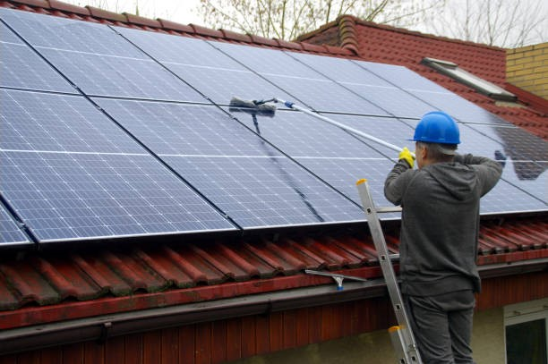

- About
- Services

- Contact
- Blogs
- Testimonials
Sparkling Clean Solar Panels in Menlo Park: A Job for the Pros
" for a brighter day "
Sparkling Clean Solar Panels in Menlo Park: A Job for the Pros
Solar panels are a fantastic investment, but they need a little love to stay efficient and effective. That’s where Rogers Windows and Gutters comes in. We offer top-notch solar panel cleaning services in Menlo Park to help you make the most of your solar power setup. With our experience and attention to detail, we’ll keep your panels shining like new and performing at their peak.
Why Is Solar Panel Cleaning Important?
Over time, solar panels collect dirt, dust, pollen, and bird droppings—just about anything the outdoors can throw at them. All that grime can block sunlight from reaching the cells, reducing their efficiency. While it might not seem like a big deal at first, those lost percentages add up. Professional solar panel cleaning ensures your panels operate as they should. It’s not just about making them look good; it’s about getting the energy you paid for. And no, a quick spray with the garden hose won’t cut it! Water spots and streaks can worsen the problem.
Why Choose Rogers For Solar Panel Cleaning In Menlo Park?
At Rogers Windows and Gutters, we’ve been keeping homes and businesses clean for years. From windows to gutters to solar panels, we’ve seen it all. Here’s what makes us stand out:
- Safety First: Climbing up on a roof is risky business. Let our trained team handle the ladders and heights while you stay safe on the ground.
- Specialized Tools and Techniques: We use cleaning solutions and tools designed specifically for solar panels. This ensures a thorough cleaning without causing damage.
- Eco-Friendly Approach: We get that solar panels are about sustainability, so we keep our cleaning methods green and gentle on the environment.
- Local Experts: As a Menlo Park business, we know the area, the weather, and the challenges your panels face throughout the year.
The Process: What to Expect
We like to keep things simple and hassle-free. When you book a solar panel cleaning service with us, here’s what happens:
- Inspection: First, we take a close look at your panels to identify any trouble spots or damage.
- Prep Work: We’ll secure the area and gather our tools, ensuring no mess is left behind.
- Gentle Cleaning: Using soft brushes, purified water, and non-abrasive solutions, we remove all the grime.
- Final Check: Once cleaned, we inspect the panels again to make sure everything is in tip-top shape.
What About Menlo Park’s Dusty Weather?
Menlo Park’s unique climate means your panels face extra challenges. Dust from dry spells, moisture from morning dew, and those random stormy days can leave panels looking dull. Scheduling regular cleanings ensures your system isn’t taking a hit from the elements. While you’re at it, don’t forget about your gutters and windows! We also offer gutter cleaner services in Menlo Park and window washing services in Menlo Park. A well-maintained home isn't just about energy efficiency; it's about curb appeal, too.
How Often Should You Clean Your Solar Panels?

The frequency of cleanings depends on where you live and how quickly debris builds up. For Menlo Park residents, we recommend cleaning your panels at least twice a year. However, if you live near construction sites or trees, you might need it more often.
DIY vs. Professional Cleaning: What’s the Difference?
Sure, you could try cleaning your solar panels yourself, but it’s not as straightforward as it seems. Most homeowners don’t have the right tools or knowledge to do it properly. And let’s face it—balancing on a ladder while scrubbing panels isn’t anyone’s idea of a good time. Hiring a pro like Rogers Windows and Gutters saves you time and effort. Plus, we do it safely and effectively, so you get the results you’re after without lifting a finger.
Get Started Today
Ready to give your solar panels the care they deserve? Contact Rogers Windows and Gutters today to schedule a cleaning. Whether you’re tackling dirty panels, clogged gutters, or smudged windows, we’ve got you covered. Let us handle the mess so you can enjoy clean, efficient solar power and a home that shines from top to bottom. Give us a call or book online—it’s that easy!